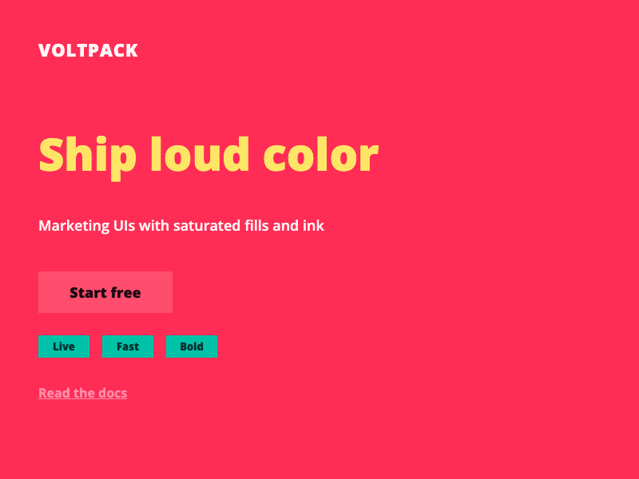
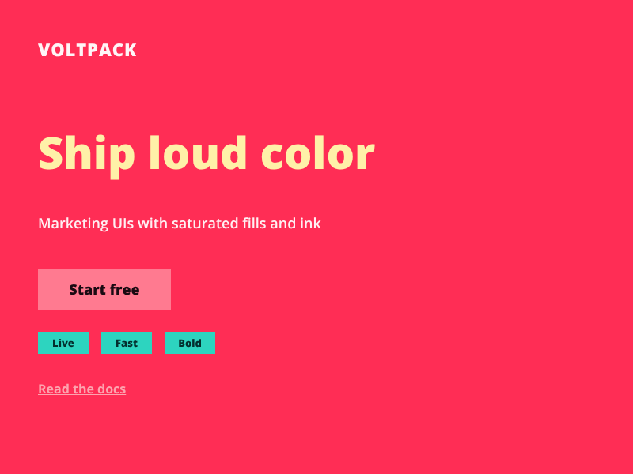
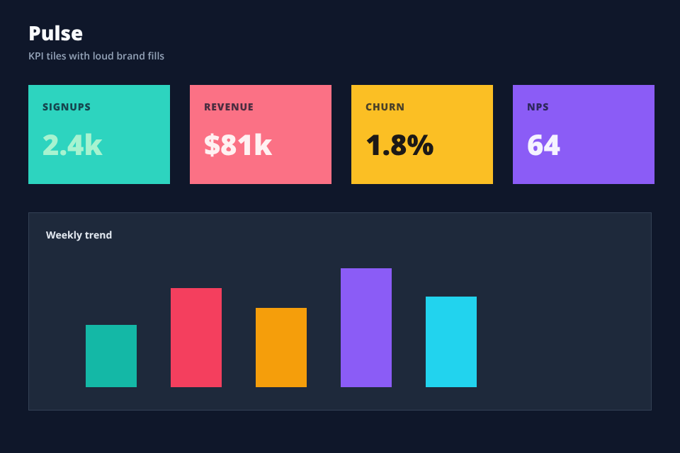
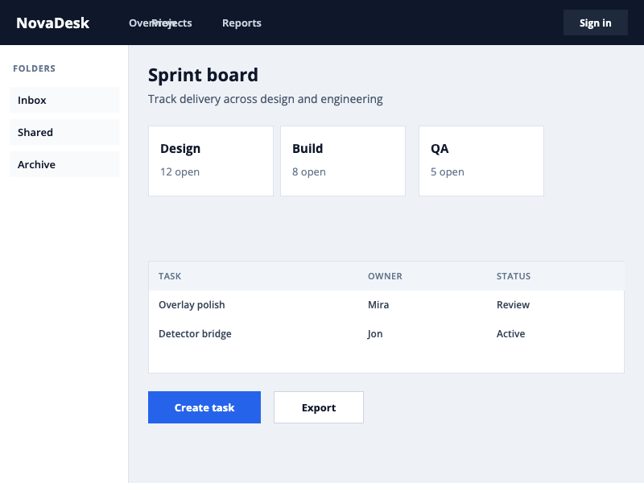
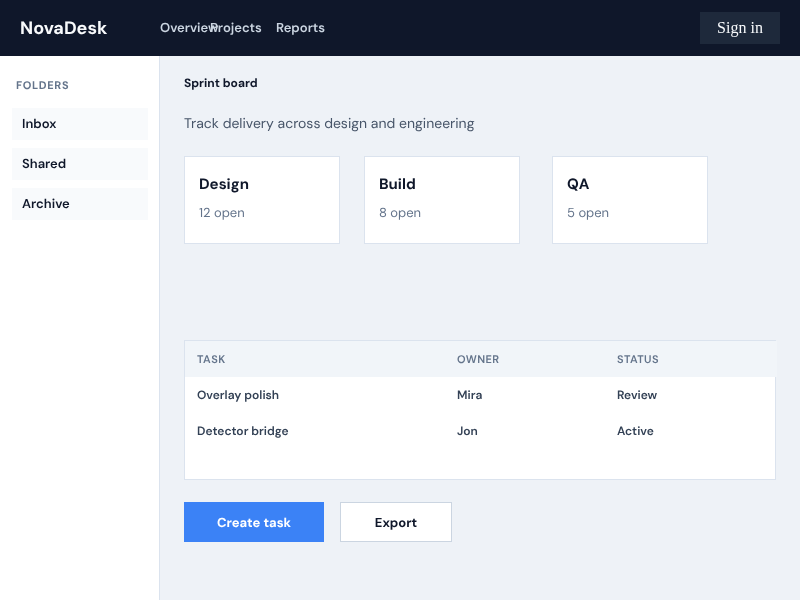

Designfigma-screenshot.png

Bulwark
Deterministic visual QA for AI coding loops — position, spacing, typography, and color checked against a fixture screenshot.


Bulwark
Soft recall on planted seeds stayed high; precision is the open problem — which is why this R&D spike is parked.

“Heading” is offset by −20.5px horizontally (tolerance ±2px).
“Ship loud color” should render at 40px but the browser reports a different size.
Extra vertical space between elements: design 77px, live 86px (+9px).
Live fills diverge from the design palette beyond the ΔE threshold.
Bulwark
NovaDesk complex fixture — good for showing that the pipeline runs on app chrome, not only marketing pages.

